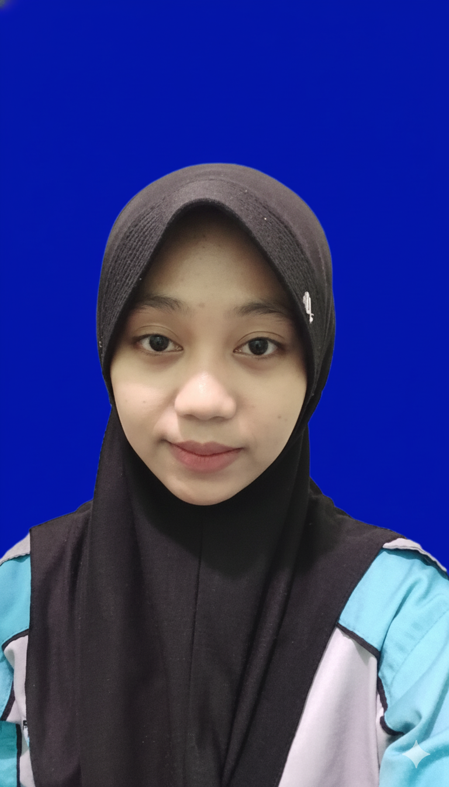

Nama
Septi Hidayatul Munawaroh
Email
septihidayatulmunawaroh48@gmail.com
No HP
087786522103
Sekolah
SMK YPC
Alamat
Tasikmalaya, Jawa Barat
Keahlian
MySQL, Laravel, Flutter, UI / UX
Tentang Saya
Rekayasa Perangkat Lunak
Hallo saya Septi, saya memiliki kemampuan dalam pengembangan aplikasi dan website dengan pemahaman pemrograman serta pengelolaan basis data. Berpengalaman mengerjakan proyek menggunakan PHP, Laravel, Bootstrap, Flutter, dan MySQL, serta menerapkan prinsip UI/UX dalam pembuatan antarmuka. Terbiasa bekerja secara rapi, teliti, dan bertanggung jawab, serta memiliki motivasi tinggi untuk terus belajar dan berkembang di bidang teknologi.